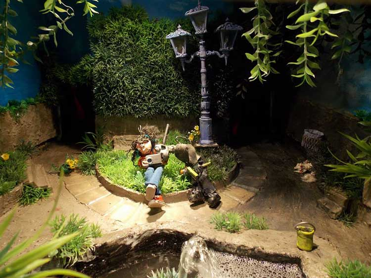
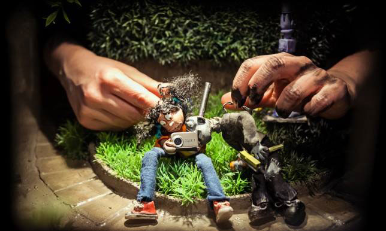

"Bellos y bestias".
"La bella linda y Carlitos bestia, contruyen una historia de encuentro junto a la fuente de la plaza de la ciudad; alli la marginalidad, el sistema y la desigualdad se desvanecen. En unos pocos instantes el futuro se ilumina con la promesa de un nuevo encuentro."

